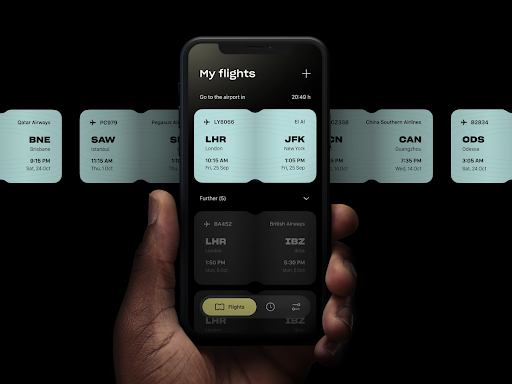

Notify Passengers of Flight Updates
Worse than having a flight delayed is not being notified about the important changes that come with it, such as new boarding times, cancellations, gate changes, and estimated arrivals. This recipe shows how ksqlDB can help airlines combine passenger, flight booking, and current flight plan data to immediately alert a passenger about flight updates in real time.

Step by step
Set up your environment
Set up your environment in Confluent Cloud, a fully managed Apache Kafka® service.
Once your Confluent Cloud cluster is available, create a ksqlDB application. ksqlDB supports a SQL language for processing the data in real time (and will soon support connector integration for reading and writing data to other data sources and sinks). Execute the recipe with the provided SQL commands using the Confluent Cloud ksqlDB editor.
Read the data in
Confluent Cloud offers pre-built, fully managed connectors that make it easy to quickly connect to popular data sources and end systems in the cloud. This recipe shows sample connector configuration(s) below, each of which should be created separately. You can also substitute your own connectors to connect to any supported data source.
This example pulls in data from different tables for customers, flights, flight updates, and bookings.
{
"connector.class" : "PostgresSource",
"name" : "recipe-postgres-aviation",
"kafka.api.key" : "<my-kafka-api-key>",
"kafka.api.secret" : "<my-kafka-api-secret>",
"connection.host" : "<my-database-endpoint>",
"connection.port" : "5432",
"connection.user" : "postgres",
"connection.password" : "<my-database-password>",
"db.name" : "<db-name>",
"table.whitelist" : "customers,flights,flight_updates,bookings",
"timestamp.column.name" : "created_at",
"output.data.format" : "JSON",
"db.timezone" : "UTC",
"tasks.max" : "1"
}
Optional: If you do not have a real data source to connect to with properly formatted data, or you just want to execute this recipe without external dependencies, no worries! In the next section, we'll show you how to insert data into the streams for testing using ksqlDB INSERT INTO.
ksqlDB code
This ksqlDB application joins between customer flight booking data and any flight updates to provide a stream of notifications to passengers.
NOTE: The Confluent Cloud Console does not allow you to execute this code in the ksqlDB editor as a single block. This limitation will be removed in the next release, but until then, copy and paste each statement into the editor and execute them one at a time.
CREATE TABLE CUSTOMERS (ID INT PRIMARY KEY
, NAME VARCHAR
, ADDRESS VARCHAR
, EMAIL VARCHAR
, PHONE VARCHAR
, LOYALTY_STATUS VARCHAR)
WITH (KAFKA_TOPIC='customers'
, FORMAT='AVRO'
, PARTITIONS=6);
CREATE TABLE FLIGHTS (ID INT PRIMARY KEY
, ORIGIN VARCHAR
, DESTINATION VARCHAR
, CODE VARCHAR
, SCHEDULED_DEP TIMESTAMP
, SCHEDULED_ARR TIMESTAMP)
WITH (KAFKA_TOPIC='flights'
, FORMAT='AVRO'
, PARTITIONS=6);
CREATE TABLE BOOKINGS (ID INT PRIMARY KEY
, CUSTOMER_ID INT
, FLIGHT_ID INT)
WITH (KAFKA_TOPIC='bookings'
, FORMAT='AVRO'
, PARTITIONS=6);
SET 'auto.offset.reset' = 'earliest';
CREATE TABLE CUSTOMER_BOOKINGS AS
SELECT C.*, B.ID, B.FLIGHT_ID
FROM BOOKINGS B
INNER JOIN CUSTOMERS C
ON B.CUSTOMER_ID = C.ID;
CREATE TABLE CUSTOMER_FLIGHTS
WITH (KAFKA_TOPIC='customer_flights') AS
SELECT CB.*, F.*
FROM CUSTOMER_BOOKINGS CB
INNER JOIN FLIGHTS F
ON CB.FLIGHT_ID=F.ID;
CREATE STREAM CF_STREAM WITH (KAFKA_TOPIC='customer_flights', FORMAT='AVRO');
CREATE STREAM CF_REKEY WITH (KAFKA_TOPIC='cf_rekey') AS
SELECT F_ID AS FLIGHT_ID
, CB_C_ID AS CUSTOMER_ID
, CB_C_NAME AS CUSTOMER_NAME
, CB_C_ADDRESS AS CUSTOMER_ADDRESS
, CB_C_EMAIL AS CUSTOMER_EMAIL
, CB_C_PHONE AS CUSTOMER_PHONE
, CB_C_LOYALTY_STATUS AS CUSTOMER_LOYALTY_STATUS
, F_ORIGIN AS FLIGHT_ORIGIN
, F_DESTINATION AS FLIGHT_DESTINATION
, F_CODE AS FLIGHT_CODE
, F_SCHEDULED_DEP AS FLIGHT_SCHEDULED_DEP
, F_SCHEDULED_ARR AS FLIGHT_SCHEDULED_ARR
FROM CF_STREAM
PARTITION BY F_ID;
CREATE TABLE CUSTOMER_FLIGHTS_REKEYED
(FLIGHT_ID INT PRIMARY KEY)
WITH (KAFKA_TOPIC='cf_rekey', FORMAT='AVRO');
CREATE STREAM FLIGHT_UPDATES (ID INT KEY
, FLIGHT_ID INT
, UPDATED_DEP TIMESTAMP
, REASON VARCHAR
)
WITH (KAFKA_TOPIC='flight_updates'
, FORMAT='AVRO'
, PARTITIONS=6);
SELECT CUSTOMER_NAME
, FU.REASON AS FLIGHT_CHANGE_REASON
, FU.UPDATED_DEP AS FLIGHT_UPDATED_DEP
, FLIGHT_SCHEDULED_DEP
, CUSTOMER_EMAIL
, CUSTOMER_PHONE
, FLIGHT_DESTINATION
, FLIGHT_CODE
FROM FLIGHT_UPDATES FU
INNER JOIN CUSTOMER_FLIGHTS_REKEYED CB
ON FU.FLIGHT_ID = CB.FLIGHT_ID
EMIT CHANGES;
In the previous section Read the data in, if you did not have a real data source to connect to, you can now use ksqlDB to insert example events into the source topics with the following statements:
INSERT INTO CUSTOMERS (ID, NAME, ADDRESS, EMAIL, PHONE, LOYALTY_STATUS) VALUES (1, 'Gleda Lealle', '93 Express Point', 'glealle0@senate.gov', '+351 831 301 6746', 'Silver');
INSERT INTO CUSTOMERS (ID, NAME, ADDRESS, EMAIL, PHONE, LOYALTY_STATUS) VALUES (2, 'Gilly Crocombe', '332 Blaine Avenue', 'gcrocombe1@homestead.com', '+33 203 565 3736', 'Silver');
INSERT INTO CUSTOMERS (ID, NAME, ADDRESS, EMAIL, PHONE, LOYALTY_STATUS) VALUES (3, 'Astrix Aspall', '56 Randy Place', 'aaspall2@ebay.co.uk', '+33 679 296 6645', 'Gold');
INSERT INTO CUSTOMERS (ID, NAME, ADDRESS, EMAIL, PHONE, LOYALTY_STATUS) VALUES (4, 'Ker Omond', '23255 Tennessee Court', 'komond3@usnews.com', '+33 515 323 0170', 'Silver');
INSERT INTO CUSTOMERS (ID, NAME, ADDRESS, EMAIL, PHONE, LOYALTY_STATUS) VALUES (5, 'Arline Synnott', '144 Ramsey Avenue', 'asynnott4@theatlantic.com', '+62 953 759 8885', 'Bronze');
INSERT INTO FLIGHTS (ID, ORIGIN, DESTINATION, CODE, SCHEDULED_DEP, SCHEDULED_ARR) VALUES (1, 'LBA', 'AMS', '642', '2021-11-18T06:04:00', '2021-11-18T06:48:00');
INSERT INTO FLIGHTS (ID, ORIGIN, DESTINATION, CODE, SCHEDULED_DEP, SCHEDULED_ARR) VALUES (2, 'LBA', 'LHR', '9607', '2021-11-18T07:36:00', '2021-11-18T08:05:00');
INSERT INTO FLIGHTS (ID, ORIGIN, DESTINATION, CODE, SCHEDULED_DEP, SCHEDULED_ARR) VALUES (3, 'AMS', 'TXL', '7968', '2021-11-18T08:11:00', '2021-11-18T10:41:00');
INSERT INTO FLIGHTS (ID, ORIGIN, DESTINATION, CODE, SCHEDULED_DEP, SCHEDULED_ARR) VALUES (4, 'AMS', 'OSL', '496', '2021-11-18T11:20:00', '2021-11-18T13:25:00');
INSERT INTO FLIGHTS (ID, ORIGIN, DESTINATION, CODE, SCHEDULED_DEP, SCHEDULED_ARR) VALUES (5, 'LHR', 'JFK', '9230', '2021-11-18T10:36:00', '2021-11-18T19:07:00');
INSERT INTO BOOKINGS (ID, CUSTOMER_ID, FLIGHT_ID) VALUES (1,2,1);
INSERT INTO BOOKINGS (ID, CUSTOMER_ID, FLIGHT_ID) VALUES (2,1,1);
INSERT INTO BOOKINGS (ID, CUSTOMER_ID, FLIGHT_ID) VALUES (3,5,3);
INSERT INTO BOOKINGS (ID, CUSTOMER_ID, FLIGHT_ID) VALUES (4,4,2);
INSERT INTO FLIGHT_UPDATES (ID, FLIGHT_ID, UPDATED_DEP, REASON) VALUES (1, 2, '2021-11-18T09:00:00.000', 'Cabin staff unavailable');
INSERT INTO FLIGHT_UPDATES (ID, FLIGHT_ID, UPDATED_DEP, REASON) VALUES (2, 3, '2021-11-19T14:00:00.000', 'Mechanical checks');
INSERT INTO FLIGHT_UPDATES (ID, FLIGHT_ID, UPDATED_DEP, REASON) VALUES (3, 1, '2021-11-19T08:10:09.000', 'Icy conditions');
Cleanup
To clean up the ksqlDB resources created by this recipe, use the ksqlDB commands shown below (substitute stream or topic name, as appropriate).
By including the DELETE TOPIC clause, the stream or table's source topic is also deleted, asynchronously.
DROP STREAM IF EXISTS <stream_name> DELETE TOPIC;
DROP TABLE IF EXISTS <table_name> DELETE TOPIC;
If you also created connectors, you'll need to remove those as well.
Explanation
Create and populate the underlying tables
ksqlDB supports tables and streams as objects. Both are backed by Kafka topics. Here we're going to create three tables in a normalized data model to hold information about our customers, their bookings, and the flights.
First off, let's create a table that will hold data about our customers:
CREATE TABLE CUSTOMERS (ID INT PRIMARY KEY
, NAME VARCHAR
, ADDRESS VARCHAR
, EMAIL VARCHAR
, PHONE VARCHAR
, LOYALTY_STATUS VARCHAR)
WITH (KAFKA_TOPIC='customers'
, FORMAT='AVRO'
, PARTITIONS=6);
This will store the data in a Kafka topic. In practice, you would probably populate this directly from your application or a feed from your database using Kafka Connect. For simplicity, here we'll just load some data directly:
INSERT INTO CUSTOMERS (ID, NAME, ADDRESS, EMAIL, PHONE, LOYALTY_STATUS) VALUES (1, 'Gleda Lealle', '93 Express Point', 'glealle0@senate.gov', '+351 831 301 6746', 'Silver');
INSERT INTO CUSTOMERS (ID, NAME, ADDRESS, EMAIL, PHONE, LOYALTY_STATUS) VALUES (2, 'Gilly Crocombe', '332 Blaine Avenue', 'gcrocombe1@homestead.com', '+33 203 565 3736', 'Silver');
INSERT INTO CUSTOMERS (ID, NAME, ADDRESS, EMAIL, PHONE, LOYALTY_STATUS) VALUES (3, 'Astrix Aspall', '56 Randy Place', 'aaspall2@ebay.co.uk', '+33 679 296 6645', 'Gold');
INSERT INTO CUSTOMERS (ID, NAME, ADDRESS, EMAIL, PHONE, LOYALTY_STATUS) VALUES (4, 'Ker Omond', '23255 Tennessee Court', 'komond3@usnews.com', '+33 515 323 0170', 'Silver');
INSERT INTO CUSTOMERS (ID, NAME, ADDRESS, EMAIL, PHONE, LOYALTY_STATUS) VALUES (5, 'Arline Synnott', '144 Ramsey Avenue', 'asynnott4@theatlantic.com', '+62 953 759 8885', 'Bronze');
Next, we'll create a table of flights and associated bookings for our customers.
CREATE TABLE FLIGHTS (ID INT PRIMARY KEY
, ORIGIN VARCHAR
, DESTINATION VARCHAR
, CODE VARCHAR
, SCHEDULED_DEP TIMESTAMP
, SCHEDULED_ARR TIMESTAMP)
WITH (KAFKA_TOPIC='flights'
, FORMAT='AVRO'
, PARTITIONS=6);
CREATE TABLE BOOKINGS (ID INT PRIMARY KEY
, CUSTOMER_ID INT
, FLIGHT_ID INT)
WITH (KAFKA_TOPIC='bookings'
, FORMAT='AVRO'
, PARTITIONS=6);
For these two tables, let's add some data. As before, this would usually come directly from your application or a stream of data from another system integrated through Kafka Connect.
INSERT INTO FLIGHTS (ID, ORIGIN, DESTINATION, CODE, SCHEDULED_DEP, SCHEDULED_ARR) VALUES (1, 'LBA', 'AMS', '642', '2021-11-18T06:04:00', '2021-11-18T06:48:00');
INSERT INTO FLIGHTS (ID, ORIGIN, DESTINATION, CODE, SCHEDULED_DEP, SCHEDULED_ARR) VALUES (2, 'LBA', 'LHR', '9607', '2021-11-18T07:36:00', '2021-11-18T08:05:00');
INSERT INTO FLIGHTS (ID, ORIGIN, DESTINATION, CODE, SCHEDULED_DEP, SCHEDULED_ARR) VALUES (3, 'AMS', 'TXL', '7968', '2021-11-18T08:11:00', '2021-11-18T10:41:00');
INSERT INTO FLIGHTS (ID, ORIGIN, DESTINATION, CODE, SCHEDULED_DEP, SCHEDULED_ARR) VALUES (4, 'AMS', 'OSL', '496', '2021-11-18T11:20:00', '2021-11-18T13:25:00');
INSERT INTO FLIGHTS (ID, ORIGIN, DESTINATION, CODE, SCHEDULED_DEP, SCHEDULED_ARR) VALUES (5, 'LHR', 'JFK', '9230', '2021-11-18T10:36:00', '2021-11-18T19:07:00');
INSERT INTO BOOKINGS (ID, CUSTOMER_ID, FLIGHT_ID) VALUES (1,2,1);
INSERT INTO BOOKINGS (ID, CUSTOMER_ID, FLIGHT_ID) VALUES (2,1,1);
INSERT INTO BOOKINGS (ID, CUSTOMER_ID, FLIGHT_ID) VALUES (3,5,3);
INSERT INTO BOOKINGS (ID, CUSTOMER_ID, FLIGHT_ID) VALUES (4,4,2);
Denormalize the data
To give us a single view of the passenger/flight data, we'll denormalize down the three tables into one. First, we join the customers to bookings that they've made and build a new table as a result:
SET 'auto.offset.reset' = 'earliest';
CREATE TABLE CUSTOMER_BOOKINGS AS
SELECT C.*, B.ID, B.FLIGHT_ID
FROM BOOKINGS B
INNER JOIN CUSTOMERS C
ON B.CUSTOMER_ID = C.ID;
From here, we join to details of the flights themselves:
SET 'auto.offset.reset' = 'earliest';
CREATE TABLE CUSTOMER_FLIGHTS
WITH (KAFKA_TOPIC='customer_flights') AS
SELECT CB.*, F.*
FROM CUSTOMER_BOOKINGS CB
INNER JOIN FLIGHTS F
ON CB.FLIGHT_ID=F.ID;
At this stage, we can query the data held in the tables to show which customers are booked on which flights:
SET 'auto.offset.reset' = 'earliest';
SELECT CB_C_NAME AS NAME
, CB_C_EMAIL AS EMAIL
, CB_C_LOYALTY_STATUS AS LOYALTY_STATUS
, F_ORIGIN AS ORIGIN
, F_DESTINATION AS DESTINATION
, F_CODE AS CODE
, F_SCHEDULED_DEP AS SCHEDULED_DEP
FROM CUSTOMER_FLIGHTS
EMIT CHANGES;
+---------------+------------------------+---------------+-------+------------+-----+------------------------+
|NAME |EMAIL |LOYALTY_STATUS |ORIGIN |DESTINATION |CODE |SCHEDULED_DEP |
+---------------+------------------------+---------------+-------+------------+-----+------------------------+
|Gilly Crocombe |gcrocombe1@homestead.com|Silver |LBA |AMS |642 |2021-11-18T06:04:00.000 |
|Ker Omond |komond3@usnews.com |Silver |LBA |LHR |9607 |2021-11-18T07:36:00.000 |
|Gleda Lealle |glealle0@senate.gov |Silver |LBA |AMS |642 |2021-11-18T06:04:00.000 |
|Ker Omond |komond3@usnews.com |Silver |AMS |TXL |7968 |2021-11-18T08:11:00.000 |
The last step in denormalizing the data is to set the key of the table to that of the flight ID so that it can be joined to the updates (which we'll get to below).
SET 'auto.offset.reset' = 'earliest';
CREATE STREAM CF_STREAM WITH (KAFKA_TOPIC='customer_flights', FORMAT='AVRO');
CREATE STREAM CF_REKEY WITH (KAFKA_TOPIC='cf_rekey') AS
SELECT F_ID AS FLIGHT_ID
, CB_C_ID AS CUSTOMER_ID
, CB_C_NAME AS CUSTOMER_NAME
, CB_C_ADDRESS AS CUSTOMER_ADDRESS
, CB_C_EMAIL AS CUSTOMER_EMAIL
, CB_C_PHONE AS CUSTOMER_PHONE
, CB_C_LOYALTY_STATUS AS CUSTOMER_LOYALTY_STATUS
, F_ORIGIN AS FLIGHT_ORIGIN
, F_DESTINATION AS FLIGHT_DESTINATION
, F_CODE AS FLIGHT_CODE
, F_SCHEDULED_DEP AS FLIGHT_SCHEDULED_DEP
, F_SCHEDULED_ARR AS FLIGHT_SCHEDULED_ARR
FROM CF_STREAM
PARTITION BY F_ID;
CREATE TABLE CUSTOMER_FLIGHTS_REKEYED
(FLIGHT_ID INT PRIMARY KEY)
WITH (KAFKA_TOPIC='cf_rekey', FORMAT='AVRO');
We now have the CUSTOMER_FLIGHTS table but keyed on FLIGHT_ID.
Add a stream of flight updates
In the FLIGHTS table above, we have the scheduled departure time of a flight (SCHEDULED_DEP). Now, let's introduce a stream of events that any flight changes will be written to. Again, we're populating it directly, but in the real world it'll be coming from somewhere else—perhaps Kafka Connect pulling the data from a JMS queue (or any of the other hundreds of supported sources).
CREATE STREAM FLIGHT_UPDATES (ID INT KEY
, FLIGHT_ID INT
, UPDATED_DEP TIMESTAMP
, REASON VARCHAR
)
WITH (KAFKA_TOPIC='flight_updates'
, FORMAT='AVRO'
, PARTITIONS=6);
Join data
By joining between our customer flight booking data and any flight updates, we can provide a stream of notifications to passengers. Many platforms exist for providing the push notification, whether bespoke in app or using a third-party messaging tool. ksqlDB can integrate with these using its REST interface, native Java client, or one of the several community-supported clients.
In one ksqlDB window, run the following ksqlDB query to return customer details with flight updates. This is the same query that you would run from your application, and it runs continuously.
SELECT CUSTOMER_NAME
, FU.REASON AS FLIGHT_CHANGE_REASON
, FU.UPDATED_DEP AS FLIGHT_UPDATED_DEP
, FLIGHT_SCHEDULED_DEP
, CUSTOMER_EMAIL
, CUSTOMER_PHONE
, FLIGHT_DESTINATION
, FLIGHT_CODE
FROM FLIGHT_UPDATES FU
INNER JOIN CUSTOMER_FLIGHTS_REKEYED CB
ON FU.FLIGHT_ID = CB.FLIGHT_ID
EMIT CHANGES;
In another ksqlDB window, add some data to the flight update stream:
INSERT INTO FLIGHT_UPDATES (ID, FLIGHT_ID, UPDATED_DEP, REASON) VALUES (1, 2, '2021-11-18T09:00:00.000', 'Cabin staff unavailable');
INSERT INTO FLIGHT_UPDATES (ID, FLIGHT_ID, UPDATED_DEP, REASON) VALUES (2, 3, '2021-11-19T14:00:00.000', 'Mechanical checks');
INSERT INTO FLIGHT_UPDATES (ID, FLIGHT_ID, UPDATED_DEP, REASON) VALUES (3, 1, '2021-11-19T08:10:09.000', 'Icy conditions');
In the original window, you will see the details of which passengers are impacted by which flight changes:
+---------------+------------------------+--------------------+----------------------+---------------------------+------------------+-------------------+------------+
|CUSTOMER_NAME |FLIGHT_CHANGE_REASON |FLIGHT_UPDATED_DEP |FLIGHT_SCHEDULED_DEP |CUSTOMER_EMAIL |CUSTOMER_PHONE |FLIGHT_DESTINATION |FLIGHT_CODE |
+---------------+------------------------+--------------------+----------------------+---------------------------+------------------+-------------------+------------+
|Gleda Lealle |Icy conditions |2021-11-19T08:10:09 |2021-11-18T06:04:00 |glealle0@senate.gov |+351 831 301 6746 |AMS |642 |
|Ker Omond |Cabin staff unavailable |2021-11-18T09:00:00 |2021-11-18T07:36:00 |komond3@usnews.com |+33 515 323 0170 |LHR |9607 |
|Arline Synnott |Mechanical checks |2021-11-19T14:00:00 |2021-11-18T08:11:00 |asynnott4@theatlantic.com |+62 953 759 8885 |TXL |7968 |